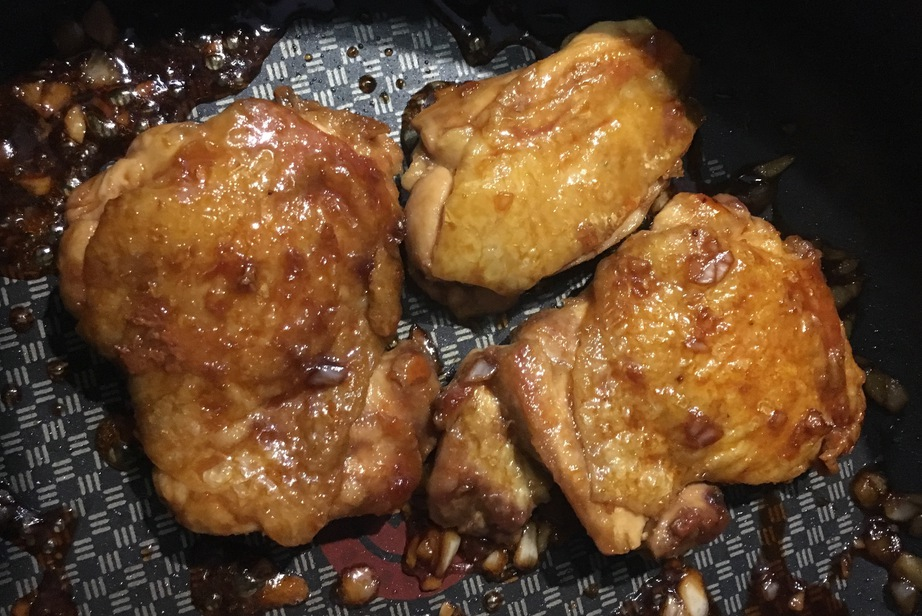

| Other | Meat | Veggie | Fruit |
|---|---|---|---|
| pepper | chicken thigh | ||
| salt | |||
| teriyaki sauce |
| instructions |
|---|
| Debone skin-on chicken thighs and prick both sides of chicken with fork |
| Salt chicken and let sit for a while to drain water |
| Marinate chicken with salt and pepper |
| On medium high heat, cook chicken skin-side down (no oil) until crispy then flip and cook until fully cooked |
| Add teriyaki sauce and simmer on medium heat until the sauce becomes thick |
| Cut chicken into bite-sized pieces and pour extra sauce on top |